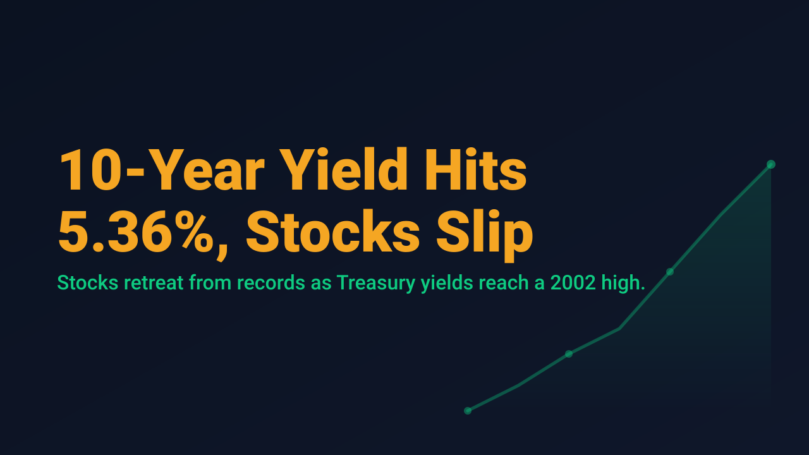
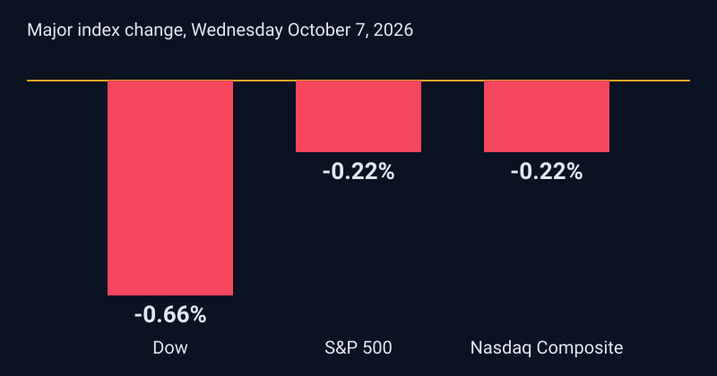

10-Year Yield Hits 5.36%, Stocks Slip

U.S. equities pulled back from record territory on Wednesday, October 7, as a surge in Treasury yields and a hawkish read of the latest Federal Reserve minutes weighed on risk appetite. The Dow Jones Industrial Average closed at 51,179.87, down 341.41 points or 0.66%. The S&P 500 finished at 7,801.77, down 0.22%, and the Nasdaq Composite settled at 27,538.69, also down 0.22%. The move followed Tuesday's session, when the S&P 500 and Nasdaq closed at record highs and the S&P 500 finished above 7,800 for the first time.
The bond market set the tone. The 10-year Treasury yield reached 5.36% in morning trading, its highest level since April 2002, before easing to close near 5.28%. The 30-year yield closed at 5.66% after touching its highest level since 2002. At 2 p.m. Eastern, the Fed minutes indicated that another increase in the federal funds target range would likely be appropriate by year end. Traders priced roughly 17% odds of a hike at the October meeting, and the next FOMC decision is scheduled for October 28.

Energy added to the pressure. November crude futures settled at $88.96, up 0.77%, while Brent traded near $100 to $102 per barrel amid attacks on shipping in the Middle East. Oil moved sharply higher in premarket trading on Thursday, with November crude near $91.93, up about 4.1%, and futures pointed to a lower open: Dow futures were down roughly 0.8%, S&P 500 futures down roughly 0.4%, and Nasdaq-100 futures down roughly 0.5%. The Cboe Volatility Index was near 15.7 in premarket trading.
For swing traders, the relevant observation is that the pullback was shallow and concentrated. The S&P 500 gave back 0.22% while the Dow, which carries more rate-sensitive and cyclical exposure, fell three times as much. Nvidia, Apple, and Microsoft together account for roughly a fifth of the S&P 500, so index-level calm can mask large rotation underneath. Third-quarter earnings season begins this week with PepsiCo on Thursday, and FactSet estimates S&P 500 earnings growth of 29.5% for the quarter. September CPI, due October 14, is the next major test for the rate narrative.
Rising yields have not yet broken the equity trend, but they have narrowed the margin for error. Traders who treat the rate and oil backdrop as an input to position size, rather than a headline, are better placed if the next data points confirm the hawkish tone.